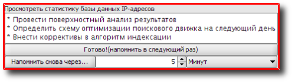
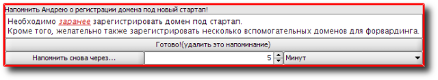

Reminder - менеджер напоминаний с возможностью создания как разовых, так и повторяющихся событий; удобной функцией является создание напоминаний в виде HTML-странички с возможностью добавления рисунков, ссылок и т.д., а также гибкое и быстрое управление режимом отображения: прямо из всплывающего окна напоминания есть возможность как удалить его (только для разовых), так и отложить до следующео повтора (только для повторяющихся) или на некоторое время (5 минут, 1 час и т.п.); особый интерес представляет возможность использования этого расширения вместе с расширением-инструментом Synchronizer, о котором было упомянуто выше; тоесть можно работать с напоминаниями, независимо от того, где оны были созданы и где вы находитесь в то время, когда они должны быть отображены (например, дома или на работе, при условии, что в обоих местах имеются копии приложения Bias, настроенные на взаимную синхронизацию).
Инструмент предоставлен Р. Касьяненко, автором приложения Bias.
Аддон использует JCalendar - Java-компонент для выбора даты в графическом режиме, предоставляемый Kai Toedter.
Предварительный просмотр:

